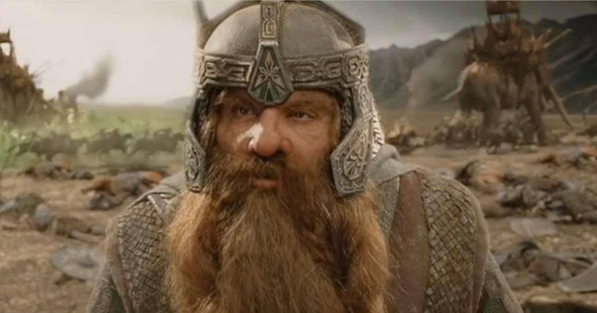
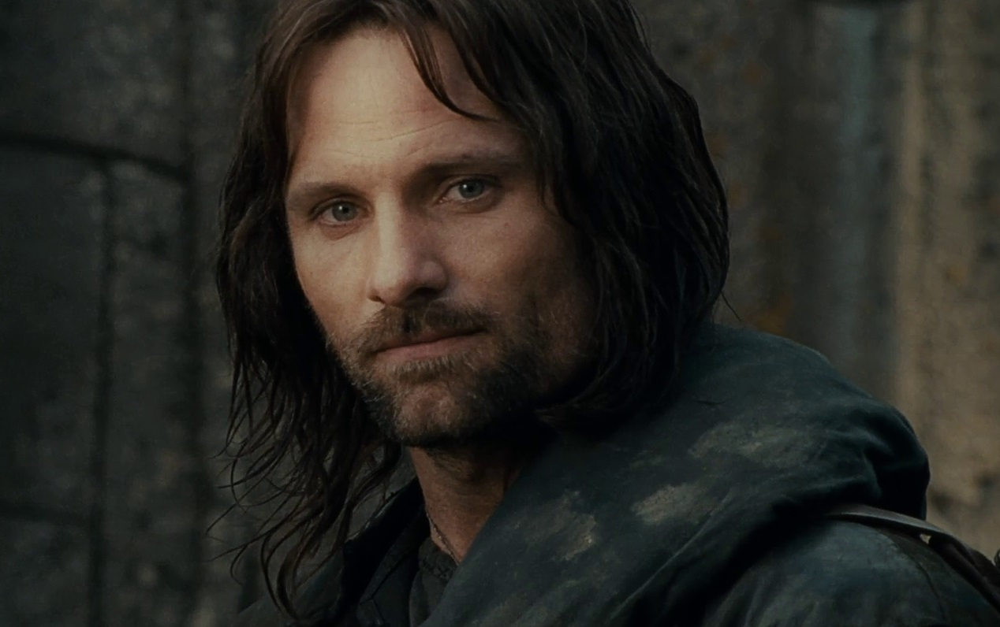
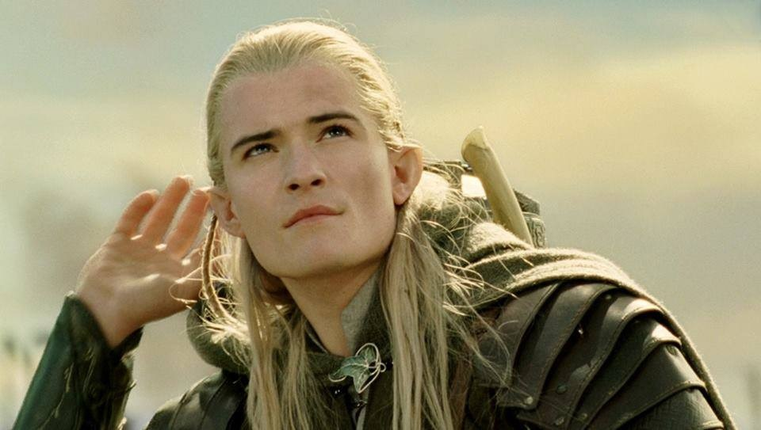

Welcome
List of original Fellowship Members
Fellowship Ages
Please click the button to get a time-based greeting:
What was the broken Fellowship
After Boromir died the Fellowship split into three paths. From there Aragorn, Legolas and Gimli chased after the Uruk-hai who took Merry and Pippin,
Gimli, son of Gloin.
Gimli, son of Gloin, was a Dwarf of the House of Durin and a member of the Fellowship of the Ring. Unlike other Dwarves, he readily fought alongside Elves in the War of the Ring against Sauron at the end of the Third Age. After the defeat of Sauron, in the early Fourth Age, he was given the lordship over the Glittering Caves at Helm's Deep, which he presided over until he departed from Middle-earth.
Aragorn, son of Arathorn.
Aragorn II, son of Arathorn II and Gilraen, also known as Elessar and Strider, was the 16th and last Chieftain of the Dunedain of the North; later crowned King Elessar Telcontar (March 1, 2931 - FO 120), the 26th King of Arnor, 35th King of Gondor and first High King of Gondor and Arnor since the short reign of Isildur. He was a great Ranger and warrior, and as Isildur's heir he bore the shards of Narsil, reforged and renamed Anduril, Flame of the West, in the Great War of the Ring.
Legolas, of the Woodland Realm.
Legolas was a Sindar Elf who was part of the Fellowship of the Ring in the Third Age. Son of the Elvenking Thranduil of Mirkwood, Legolas was Mirkwood's prince, a messenger, and a master archer. With his keen eyesight, sensitive hearing, and excellent bowmanship, Legolas was valuable to the Fellowship in their journey across Middle-earth. He was well-known for becoming friends with the Dwarf Gimli, despite their long-held differences.
